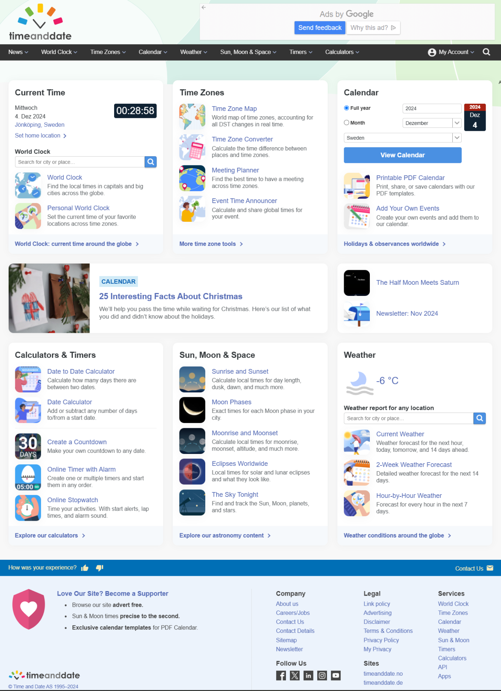

Original
I chose the "timeanddate" homepage for this assignment. It has been quite useful to me throughout the years, not only offering indepth information about the weather but also celestial bodies. Nevertheless, the homepage seems a bit cluttered at first glance and the overal theme had no connection to the websit's content.
Redesign
After thinking about the website's purpose & context, I came to the conclusion that a less detailed homepage could help visitors not get lost. On top of that, I decided to adjust the colours of the website to a palette that better represents weather & space. When it came to the typography itself, I didn't see any flaws with it, since it represented the website well, plus keeping some features the same as before would prevent the page from losing it's character. To add a friendlier and more immersive feel to it, I would change the background based on what time it is for the user.


Feel free to check out the final product yourself on Figma.